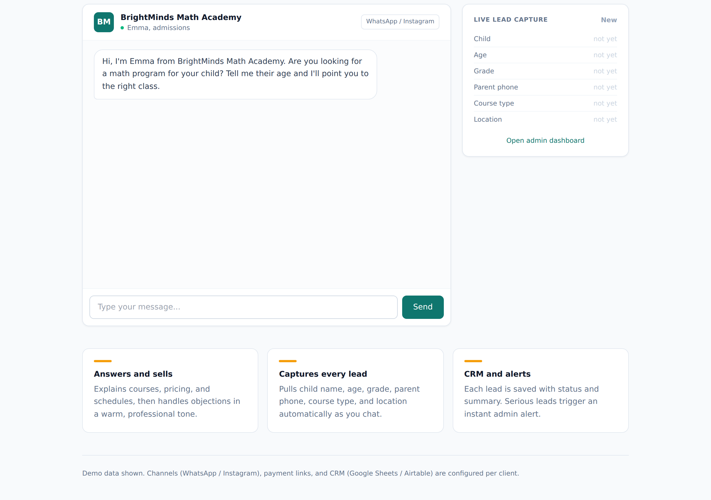

AI Sales & Lead-Gen Chatbot (WhatsApp / Instagram)¶
Status: Live demo
Demo: mathbot.robiriu-dev.my.id (admin at /admin)

Executive Summary¶
A 24/7 AI sales and enrollment assistant for a service business (demo: a children's mental-math academy). It answers course, pricing and schedule questions, handles objections with a warm and persuasive tone, captures every lead from the conversation, classifies the lead status, and saves it to a CRM with an admin dashboard and hot-lead alerts. The web chat runs the same engine that connects to WhatsApp Business and Instagram DM.
How It Works¶
Each turn runs two grounded LLM calls:
- Conversation — a system-prompted Gemini call answers the customer using only the business knowledge base (courses, pricing, schedules, FAQs), staying in a concise WhatsApp tone.
- Lead extraction — a separate JSON-mode call reads the full transcript and extracts/updates a structured lead record, merging with the previously stored values so nothing is lost across turns.
The lead is upserted to a file-backed CRM. The first time a lead becomes "hot" (contact captured plus genuine intent), an admin notification can fire (Telegram-ready).
Key Features¶
- Grounded answers — pricing, schedules and policies come only from the configurable knowledge base, never invented.
- Progressive lead capture — name, age, grade, parent phone, course type, and location are gathered conversationally, one at a time.
- Status classification — Interested / Waiting for Payment / Paid / Not Suitable, derived by the extraction model.
- Live CRM dashboard at
/admin— leads table with status filters, conversation summaries, needs, objections, and follow-up flags; auto-refreshing. - Hot-lead alerts — a Telegram (or email) notification on the first serious lead.
- Channel-agnostic engine — the same conversation core plugs into WhatsApp Business (Cloud API) and Instagram DM.
Technology Stack¶
| Layer | Technology |
|---|---|
| LLM | Gemini 2.5 Flash via Vertex AI |
| Conversation | System-prompted multi-turn chat, KB-grounded |
| Lead extraction | Separate JSON-mode call with schema validation and merge |
| Frontend / API | Next.js 15 (App Router), TypeScript, Tailwind CSS |
| CRM store | File-backed JSON (swappable for Google Sheets / Airtable) |
| Alerts | Telegram Bot API (optional) |
| Deployment | pm2 + nginx, Let's Encrypt SSL on a VPS |
Skills Demonstrated¶
- Conversational AI design (sales tone, objection handling, progressive profiling)
- Structured information extraction from free-form chat (JSON mode + merge logic)
- CRM modelling and lead-status classification
- Multi-channel chatbot architecture (web, WhatsApp, Instagram)
- Vertex AI integration via a GCP service account